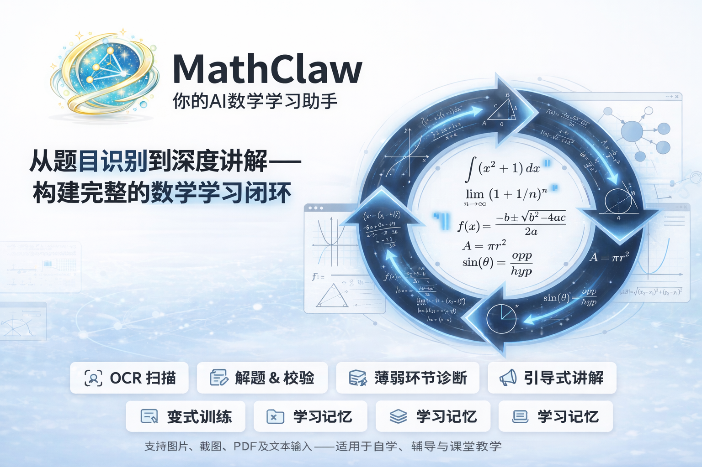
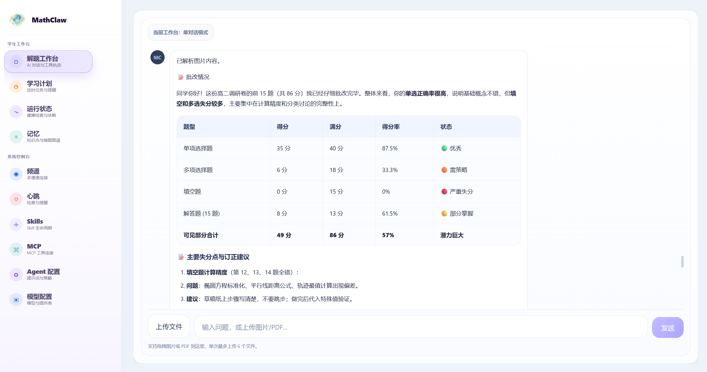
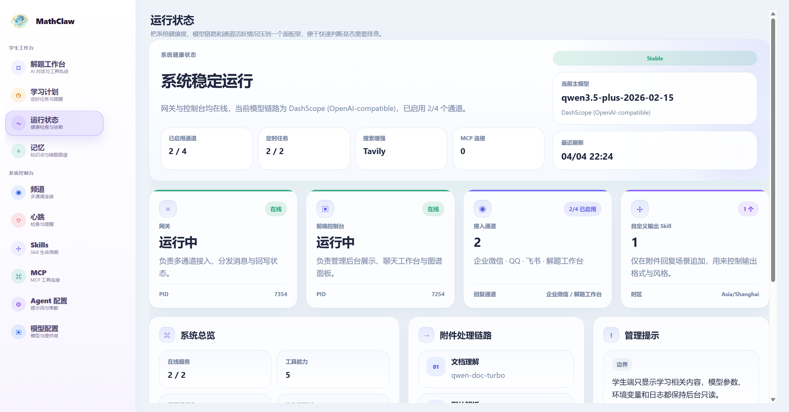
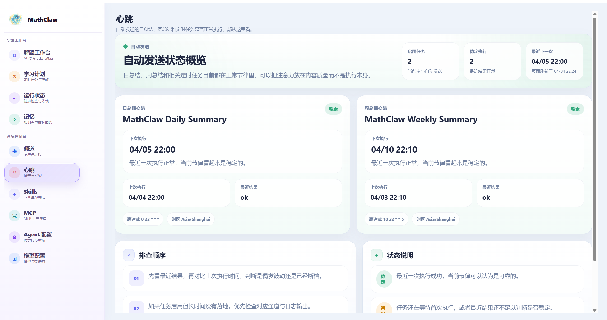
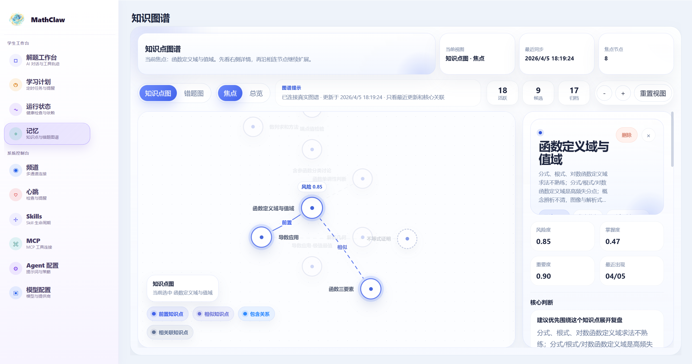
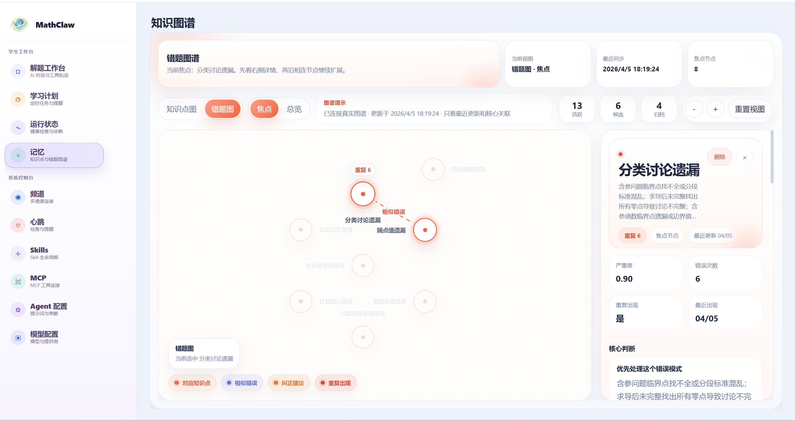
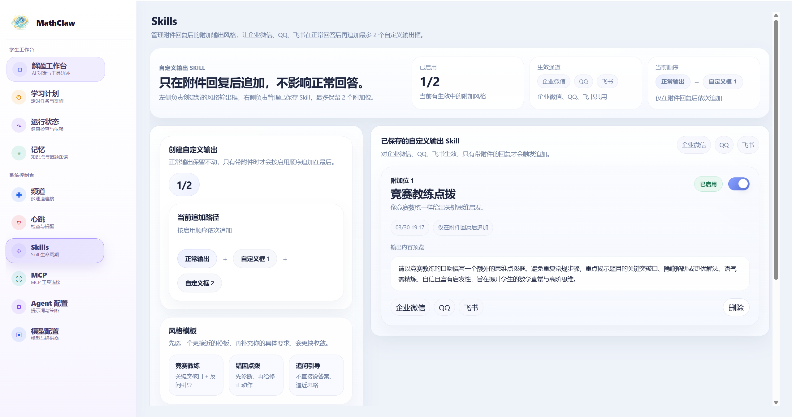

解题工作台
支持上传题目图片或 PDF，在单对话工作台内完成诊断、讲解、批改与追问。
把图片、PDF、错题、学习计划和自动总结整合进同一个数学学习工作流， 让解题、复盘、记忆和督学形成连续闭环。

MathClaw 不是单点问答，而是一整套面向学生工作台与管理工作台的学习系统。
支持上传题目图片或 PDF，在单对话工作台内完成诊断、讲解、批改与追问。
把每日状态、明日建议、重点纠错方向和优先复习知识点整理成行动面板。
知识图谱与错题图谱分别追踪结构化知识掌握和高频错误模式。
可接入企业微信、QQ、飞书等通道，把同一套学习代理运行到真实沟通场景里。
日总结、周总结和定时任务状态可视化，方便持续跟踪学习节奏是否稳定。
为附件回复场景增加额外输出风格，让讲解更像竞赛教练、纠因点拨或追问引导。
MathClaw 将对话、计划、错题、知识图谱与自动总结联结到同一套工作区里。 学生可以在一个入口内持续学习，管理侧也能看到稳定性、记忆更新和任务执行情况。
解题、计划、记忆三类核心页面围绕学习本身展开。
运行状态、心跳、Skills、MCP 与模型配置用于管理整套系统。
同一套代理运行于控制台和企业沟通场景，避免前后台割裂。
以下截图来自 MathClaw 当前产品界面，展示学生侧与管理侧的核心页面。






企业微信、QQ、飞书与控制台统一进入同一套消息循环。
围绕解题、讲解、批改、追问和附件输出 Skill 进行生成。
把对话转成日记忆、周记忆、知识图谱和错题图谱。
以前端工作台和自动任务状态监控来承接管理操作。
同一个 workspace 保存 sessions、memory、graphs、cron 与技能配置。
对话先进入原始 session，再被整理成 daily / weekly memory 与图谱数据源。
运行状态、心跳、Skills、MCP 与模型配置页保持可见、可读、可维护。
支持单对话模式、图片/PDF 上传、结构化回复和教师风格引导，是学生最直接的主工作区。
将每日状态、本周计划、明日建议、复习知识点与纠错方向整理成紧凑的学习面板。
知识图谱追踪学习结构，错题图谱追踪错误模式，二者共同服务于复盘与补弱。
对日总结、周总结和相关任务进行可视化监控，帮助判断整个系统是否稳定运行。
仅在附件回复场景下附加自定义输出框，让讲解语气和结构贴合不同教学风格。
提供企业沟通通道接入与 MCP 工具连接，让代理可真正部署到外部环境中。
以下命令基于仓库当前结构，适合直接在源码目录中启动 MathClaw。
python -m venv .venv
. .venv/bin/activate
pip install -e .mkdir -p workspace/sessions
mkdir -p workspace/memory
mkdir -p workspace/cronmathclaw gateway \
--workspace ./workspace \
--channel wecomcd console
MATHCLAW_CONSOLE_WORKSPACE=../workspace \
python serve.py